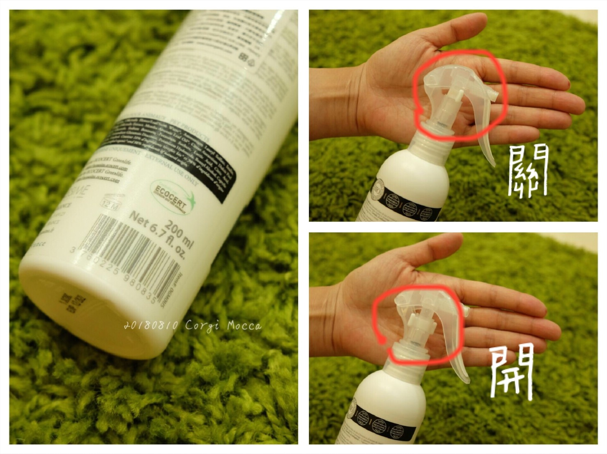

（本文為廠商提供產品的試用文，除產品試用外，無稿費）
這次試用的另外兩樣是卡卡＆卡栗可以一起使用的產品
說真的養了栗子之後，現在買這類的產品都要特別看成份是對貓咪無害的才行
所以貓狗可以一起用的產品絕對會增加我購買意願

成份有機薄荷葉油、有機香蜂草萃取、有機褐藻萃取、天然琉璃苣油
富含維他命E，平衡淨化毛孩肌膚，
保濕有機植萃添加，加強保濕度同時提升彈性
產品都是98%天然成分 10%有機成分 無 Paraben 防腐劑 / 無色素 / 無矽靈
卡栗的小舌頭好可愛啊～感恩廠商邀稿都會特別提供栗子可以使用的產品
這小妞真的是蠻心機的，拍照完全不輸卡卡哥的呆萌（還自帶驚恐XD）

這瓶乾洗慕斯，卡卡呢我主要用來每日散步回家後的腳底清潔
每天散步每次都要洗腳的話太費事兒 絕對不可能
平常都是用清水濕毛巾擦腳而已

它的使用很簡單，用量也很省
擠適量的乾洗慕斯於濕毛巾上直接擦拭
一個腳掌大約擠出5塊錢大小泡沬就足夠（照片是為了清楚才擠這麼大陀）

以前用清水弄濕毛巾一定要擦個兩、三回合直到腳掌變回粉嫩為止
現在搭配乾洗慕斯，只要「一次」就能輕鬆就把腳底髒汙清潔乾淨!!!!
用了它之後懶婦我真的有種相見恨晚的感覺
到底為什麼不早一點去找這類似的商品用啊，方便快速超多的
而且腳腳還是保有「臭咖咻」外加一點點薄荷的香氣，太好聞了～～
（猛哥覺得我愛聞卡卡的腳底相當變態XD）

至於栗子，領養回來一年了完全沒有洗過澡，
好在她不玩屎，撥沙技術也很好肉球不會沾到屎
我聞遍了她全身真的完全不臭
本想說哪裡臭就先試用哪裡好了，結果她反而有淡淡的痱子粉味(?) 好好聞XD
這顆栗子很喜歡梳毛，看到梳子就自動靠過來蹭蹭

大部分的貓咪都討厭被弄濕當然也不享受洗澡，
但難免會有弄髒身體的狀況發生，乾洗慕斯就很適合喵星人
使用在身體部位我會搭配梳子使用，泡沬擠在梳子上或身上都可以
利用梳子將泡沬帶入毛髮裡，順帶清理廢毛，之後再用乾毛巾擦乾淨就完成
（不要用濕毛巾，我試過會愈擦愈濕....）
擦拭完後，毛髮非常乾爽，沒有黏膩糾結
毛擦乾後還有一種鬆鬆的舒爽感，味道淡淡的貓咪也不會討厭

試用在小貓尾巴沒有不良反應後，就直接用在大頭卡＆栗子頭上了
泡泡擠在頭上真的太可愛了啦！
兩個一起spa的感覺真好
同時有喵星人跟汪星人的家庭一定懂，最喜歡看到他們一起的時刻

栗子爽貓，一梳毛就爽爽的摩蹭享受，完全沒辦法拍到正面 哈哈哈
卡卡的大頭也是只要一小球泡泡就搞定，擦完臭頭立刻香香

乾洗慕斯真的很方便好用，是我會想回購的商品
但不會拿來取代洗澡這件事
卡卡，主要是散步後的腳掌跟小基腿上的毛髮清理，
有時尿尿太大泡難免會噴到前腳毛
夏天散步的晚，回家若洗腳還要吹乾真的很麻煩，用乾洗慕斯不僅乾淨還去異味
又，卡卡因為太可愛很常被摸頭，用來擦頭也剛好，馬上恢復香香
卡栗，主要也是局部清潔，會著重在屁屁周圍及貓咪自己舔不到的部分
因為貓咪理毛的很勤，會把自己打理很乾淨，
所以頻繁大面積的擦拭我倒是覺得不需要
雖然產品成份天然安全，但過度舔入也不好

＝＝＝＝＝＝＝＝＝＝＝＝＝＝＝＝＝＝＝＝＝
再來是這款 有機驅蟲噴霧-順毛配方【犬貓通用】
成份：有機香蜂草萃取、有機燕麥仁萃取
因為卡栗的加入，卡卡之前使用的滴濟＆驅蟲噴霧產品也都替換過了
市面上很多適合狗狗的產品，不一定可以用在貓身上，這點真的要很小心注意
又加上貓咪理毛佔日常很重要一部分，就算是外用產品也都要避免舔入的狀況
毛孩星球有很多商品都有考量到這一點，真的很友善犬貓家庭啊
對卡卡平常的防蟲方式，我家是定期點防蟲滴劑＋外用驅蟲噴霧
外用驅蟲噴霧對我來說就是多一層防護，但必需要搭配滴劑才能有效防蟲上身

只要帶卡卡去草地跑跑一定會噴上驅蟲噴霧，所以車上、家裡我都備了一瓶
我幾乎是噴卡卡全身，再局部加強小短腿、腹部及背部
因為這小子出門就是有可能會嚕草啊～

每次都噴到猛哥都怒喊 「好了！卡卡已經全濕了 XDDD」我才罷手
我個人覺得這個防曬產品一樣，噴不均圴或噴不夠根本沒屁用啊

對於噴劑味道我完全討厭像木酢液那種會停留在毛海濃厚的烏梅味
這瓶的味道非常的淡，幾乎要很近很近才能聞到一點點草本(?)味，
但說明不出確切是什麼香味 XD 總之是好聞舒服的
質地是接近透明的水狀，噴出的面積頗大，噴頭設計也很好使用不會卡卡的

還有一點，噴瓶上的卡榫設計也很優，不需要另外拔起卡榫就不怕弄丟
只要簡單往上旋轉（關）往下旋轉（開）
外出放在包包也不怕不小心按壓到

說實在這類產品無法說出實際效用如何
但使用到目前為止卡卡回家是沒有發現蟲蟲上身就是
不過這瓶驅蟲噴霧光是貓咪也可以共用這點就深得我心
卡栗也會外出，但次數不頻繁
要買一瓶貓咪專用的大概給5年效期也用不完 XD
推薦給跟我一樣是犬貓家庭的朋友，可以參考看看

 【毛孩星球四大保證】
【毛孩星球四大保證】
1.唯一獲歐洲Ecocert有機認證寵物保養品牌
歐洲最具權威代表性的有機認證,嚴格控管成份來源,每年需複檢。
2.原料及商品都不進行動物實驗
保護地球愛動物,從原料取得到最終商品皆不進行動物實驗。
3.法國獸醫師的專業建議，適合寵物的天然有機成分配方
經法國獸醫師的專業建議,嚴選最適合毛孩的天然有機成分調配。
4.製程符合國際GMP認證
確保所有產品品質,每一道製程都符合國際 GMP 認證。
＝＝＝＝＝＝＝＝＝＝＝＝＝＝＝
 毛孩星球新品上市，現在官網有任兩件七折的活動哦！
毛孩星球新品上市，現在官網有任兩件七折的活動哦！